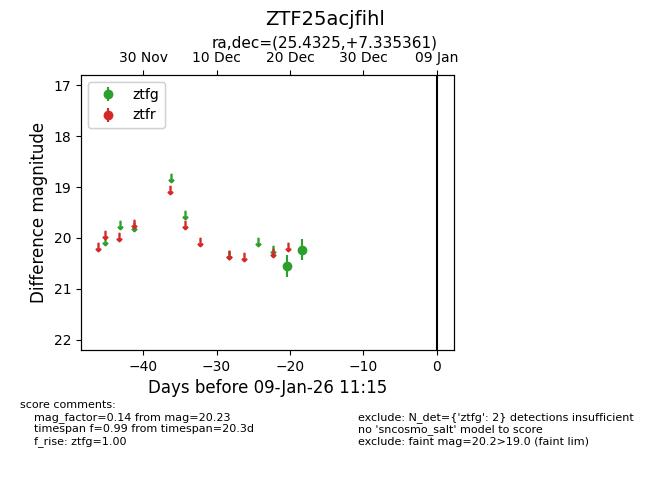
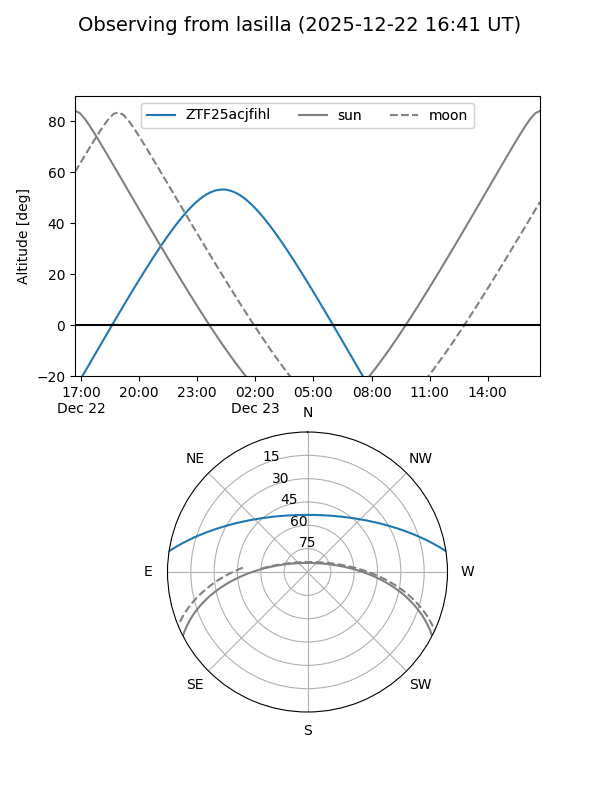
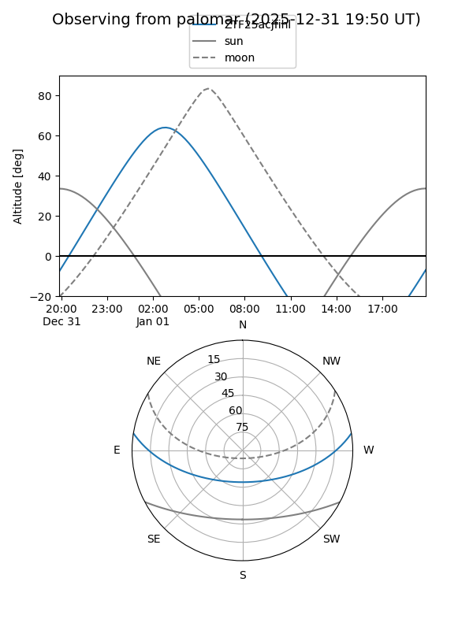

ZTF25acjfihl
Target ZTF25acjfihl at 2025-12-24 16:17
Aliases and brokers:
FINK: fink-portal.org/ZTF25acjfihl
Lasair: lasair-ztf.lsst.ac.uk/objects/ZTF25acjfihl
ALeRCE: alerce.online/object/ZTF25acjfihl
alt names
ZTF25acjfihl (ztf,fink_ztf)
Coordinates:
equatorial (ra, dec) = 25.4325,+7.33536
equatorial (HMS+DMS) = 01:41:43.80,+07:20:07.30
galactic (l, b) = (144.1873,-53.44812)
Flags:
Photometry:
last ztfg=20.23
2 ztfg detections
Lightcurve

Visibility


Additional plots